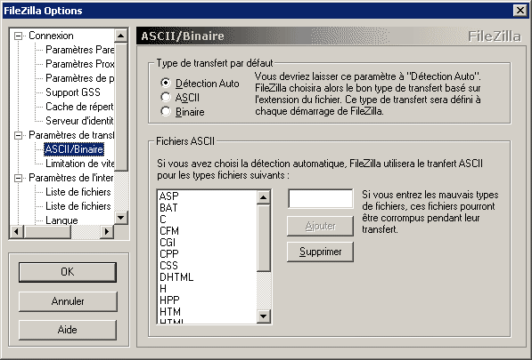

Transfert ASCII/Binaire
Vue d'Ensemble
Plus particulièrement quand un serveur FTP utilise un système d'exploitation différent du votre, il se peut que vous ayez à utiliser des modes de transfert différents pour différents types de fichiers. Par défaut, FileZilla essaie de détecter le type de fichiers et sélectionne un mode de transfert. Cette page vous permet de contrôler la sélection du mode de transfert.

| Type de transfert par défaut | - | Laissez cette option sur Détection Auto, sauf si vous voulez obliger FileZilla à utiliser un mode spécifique pour chaque transfert, ce qui n'est pas conseillé |
| Fichiers ASCII | - | Quand vous choisissez Détection Auto, FileZilla choisit le mode ASCII pour tous les types de fichiers qui figurent dans la liste. Pour ajouter un nouveau type de fichier, entrez l'extension dans le champ de texte et cliquez sur Ajouter; pour supprimer un type de fichier, sélectionnez le dans la liste et cliquez sur Supprimer. |
Attention: si des mauvais types de fichier se trouvent dans la liste ou si vous avez sélectionné un type de transfert autre que Détection Auto, le transfert aura pour résultat une corruption des fichiers.